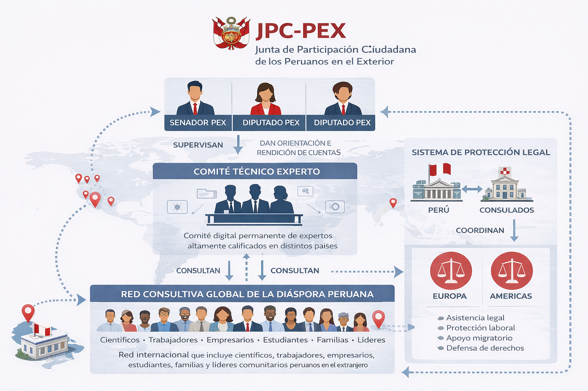

José Gálvez
menos ruido, más país
Primero ordenar el Estado, luego construir el desarrollo. Una propuesta seria para los peruanos en el exterior, con resultados verificables en 24 meses.

Recuperar estabilidad, seguridad y previsibilidad
Este programa rechaza el populismo de megaproyectos sin base estatal. Primero se ordena el Estado; luego el crecimiento genera infraestructura sostenible. La diáspora debe integrarse como capital humano estratégico, no solo como padrón electoral.
Sobre José Gálvez
Una voz firme para los peruanos en el exterior
José Gálvez es candidato al Senado de la República por la circunscripción de Peruanos en el Exterior (PEX) con el número 2 de Fuerza Popular. Con raíces en Ayacucho, Cajamarca, Iquitos y Chiclayo, representa una visión de país que une identidad, conocimiento y responsabilidad política.
Su propuesta parte de una convicción clara: los peruanos en el exterior deben ser parte activa del desarrollo del país, no solo como migrantes o remitentes de remesas, sino como una comunidad estratégica que aporta experiencia, talento y redes internacionales.
Su candidatura impulsa un plan legislativo enfocado en tres prioridades: la integración efectiva de la diáspora peruana, el impulso a la ciencia e innovación, y la promoción de una energía competitiva para el desarrollo productivo.
José Gálvez propone una política basada en orden institucional, pensamiento estratégico y resultados concretos, convencido de que el Perú necesita menos improvisación y más planificación.
José Gálvez, candidato al Senado PEX por Fuerza Popular, número 2, propone una representación moderna y efectiva para los millones de peruanos que viven fuera del país.
Su propuesta reconoce que la comunidad peruana en el exterior no solo sostiene vínculos familiares y económicos con el Perú, sino que también constituye una fuerza social, profesional y estratégica para el desarrollo nacional.
Su agenda legislativa busca fortalecer la relación entre el Estado y la diáspora peruana mediante servicios consulares más eficientes, protección de derechos, impulso a la inversión desde el exterior y mecanismos reales de participación política.
Para los PEX, esta candidatura representa una opción seria: una voz que entiende el valor del trabajo migrante, la importancia del mérito, y la necesidad de construir puentes entre el talento peruano en el exterior y el futuro del país.
PEX no debe ser una periferia política. Debe ser una prioridad nacional.
Una política seria, moderna y con visión de futuro para los peruanos dentro y fuera del país.
José Gálvez al Senado PEX. Marca la K y escribe 2.
Bien hechas, en el orden correcto
Diáspora integrada
Junta de Participación Ciudadana (JPC-PEX) obligatoria, servicio consular profesional y participación institucional.
- Supervisión de consulados
- Protección jurídica transnacional
- Ventanillas administrativas amigables
Ciencia e I+D
CONCYTEC fortalecido como agencia estratégica, proyectos emblemáticos y cooperación científica internacional.
- Reforma y retorno a PCM
- Investigación multidisciplinaria
- Redes con la diáspora científica
Energía competitiva
Business plan para planta de generación ≥100 MW, con evaluación de tecnologías avanzadas (incluyendo SMR nucleares).
- Energía confiable y barata
- Polos productivos y empleo
- Equipo técnico con IPEN y expertos internacionales
Junta de Participación Ciudadana (JPC-PEX)
Un mecanismo institucional permanente para que la diáspora pase de usuaria de servicios a actora institucional del Estado peruano.

Modelo institucional de la JPC-PEX
La base del desarrollo real
CONCYTEC
Reorganización y retorno a la PCM como agencia estratégica, con proyectos emblemáticos como la investigación de la historia antigua.
Energía de base
Evaluación rigurosa de tecnologías, incluyendo reactores modulares pequeños (SMR), para garantizar energía barata y confiable.
Polos productivos
La energía competitiva permitirá industrialización, minería sostenible y empleo formal, atrayendo inversión privada.
Hoja de ruta con entregables trimestrales
Convocatoria
A patrocinadores y aliados institucionales que apuesten por un Estado estable, ciencia aplicada y energía competitiva, con integración real de la diáspora.
Contáctanos